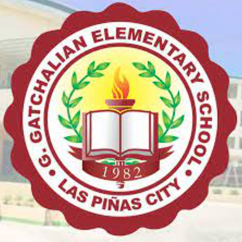

UnderGraduate Bachelor of Science in Computer Science (2021 - )

Senior High School (2018 - 2020)

High school (2014 - 2018)

Elementary School (2011 - 2014)

I'm a computer science major at AMA Computer College. I'm an aspiring software engineer and I'm excited to pursue a career in this field. I've always been interested in technology ever since my highschool days I was amazed on programming and I knew that I wanted to make a career out of it. I'm excited to see what the future holds for me. I'm looking forward to using my current skills to make a positive impact on the software engineering industry.
UnderGraduate Bachelor of Science in Computer Science (2021 - )
Senior High School (2018 - 2020)
High school (2014 - 2018)
Elementary School (2011 - 2014)
'Click the hobbies' to see.